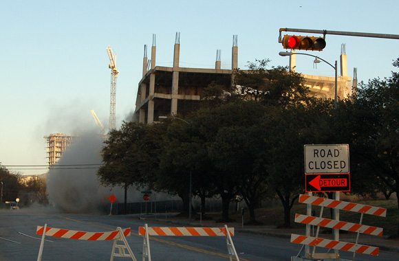

Home
Desktops
Ringtones
RSS
Printed from
http://thatotherpaper.com/austin/slideshows/photos_from_the_intel_shell_implosion
Photos from the Intel shell implosion
25 February 2007
|
Todd Ross Nienkerk
Previous
| Image
7
of
19
|
Next

The northeast side of the structure begins to fall
Read our coverage of the Intel building demolition »
E-mail
Login
to post comments
Overheard in Austin
The Happiest Hours
All You Can Eat
Capital City Cheapo
Dr. Daley
GeekPop!
Listening Parties
The Safe Word
Techsploitation
TOP Picks
Itineraries
Bill and Erik
Honest to God
Penciltucky
South 40
Strippy
Recent posts
Mike O’Connell: Figuring out what it’s all about
Saving us from the Constitution
Judge Judy’s wrath shakes the ground
Bill and Erik | Ponies
Michael Bay’s rejected ‘Dark Knight’ script
Recent comments
CashGiftingcabbie: All fine and dandy but the
Anonymous: It is. I’ll show you my
Late Night Austin Real Estate: I love that you can hear
aoc gold: Just pray they don’t make
Anonymous: Will you guys accept the
Anonymous: You only get $1.25 PER POUND
Chris Dixson: We were wondering if any of
Matthew: As soon as I started read
Favorites
Drupal design, development, and consulting
Pressflow makes Drupal scale
Top Hat Tap Dance
Free Link Directory
Link Directory


Recent comments